幻立方是《最强大脑》第二季晋级赛第三场的挑战项目，道具一经亮相，剔透的“水晶立方”便震撼全场，评审人也禁不住惊叹于数学之美。项目要求在由343个小立方体组成的大立方体中先确认1的初始位置，随后在各方格中一一填入数字，使得大立方体中每行、每列、平面及空间对角线上的数之和全部等于1204。海量运算面前，选手在较短时间内完成了填数。
节目组特别邀请了中国幻方协会副主席进行验证，证明挑战成功，但对选手有质疑，称“挑战很简单，协会中有二十余人全能完成”。一语惊呆众人，现场剑拔弩张。最后评审团给出的难度系数仅为3，因总分低于80分而惨遭淘汰。
笔者无意加入口水战，只是介绍幻立方的构造方法，难易任人评说。
幻立方是指n×n×n的三维幻方，其n2个行、n2个列、n2个纵列以及4条空间对角线上的n个数之和都相等，这叫“基本幻立方”或“半完美幻立方”；如果3个方向上的每个横截面本身都是幻方，即不但行、列上的n个数之和等于幻和，其2条主对角线上的数之和也都等于幻和，那么就叫“完美幻立方”。显然，不管是半完美的还是完美的，幻立方的幻和应等于
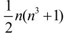
。半完美幻立方中有3n个平面幻方，满足幻和的n数之和有3n2+4，完美幻立方则有3(n+2)个平面幻方（除了水平、垂直、纵切3个方向上各有n个外，通过立方体每一组对边的截面也是一个幻方），满足幻和的n数之和有3n2+6n+4或3n(n+2) +4。可以证明，不管是半完美幻立方还是完美幻立方，单偶阶即n=2(2m+1)的情况都是不存在的。奇数阶及双偶阶(n=2·2m)人们已经找出了构造的方法，并且从数学上给予了一般的证明。由于比较繁复，我们这里就不介绍了。
图7-1是一个最简单的三阶半完美幻立方，幻和为42，共31组。图中把幻立方分解为3个剖面进行展示。已经证明，三阶和四阶完美幻立方是不存在的。
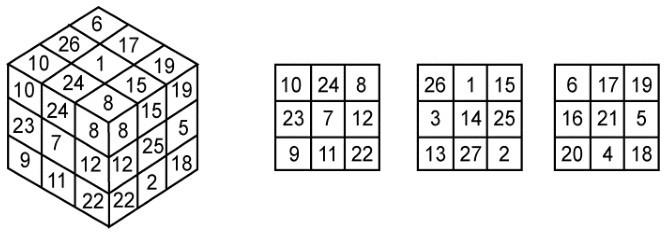
图7-1
三阶幻立方不可能是完美的可用反证法证明如下。设有三阶完美幻立方，取平行于该立方体表面的任一方阵，设它第一行中的3个数分别是A、B、C，第三行中的3个数是D、E、F，第二行中间的一个数是X。因为三阶幻立方的幻和为42，它又是完美的，所以必有以下等式成立。
A+B+C=42
D+E+F=42
(A+X+F)+(C+X+D)+(B+X+E)=3×42
即有3X+(A+B+C)+(D+E+F)=3×42。由此可得，3X=42，X=14。
注意，我们以上的讨论是针对幻立方中任意一个截面进行的，因此结论适用于幻立方中的任意截面。也就是说，幻立方中任意截面正中间的元素都应取14。但是按规定，幻立方中任意一个数都不能重复出现，这就说明三阶完美幻立方是不存在的。

要制作奇数阶幻立方先要从普通幻方的连续摆线法开始。连续摆线法是一种适用于奇数阶幻方构造的比较古老的方法。据查，它于1687年由法国驻泰国大使洛贝利从泰国带回法国，从而传播开来，故这个方法在西方又称“暹罗法”。
连续摆线法的法则如下。
把1放在中间一列最上边的方格中，从它开始，按对角线方向（比如说按从左下到右上的方向）顺次把数按从小到大的顺序放入各方格中。如果碰到顶，则折向底；如果到达右侧，则转向左侧；如果进行中轮到的方格已有数或到达右上角，则退至前一格的下方。
按照这个法则建立的五阶幻方的示例如图7-2所示。
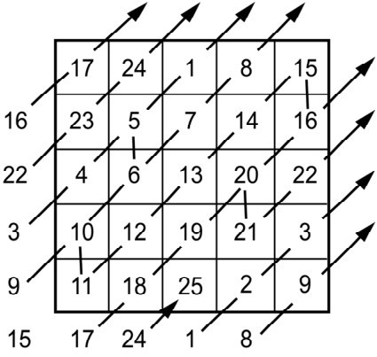
图7-2
这个方法可以推广到一般情况，即起始数不一定非摆在第一行中间，下一个数也不一定非摆在上一个数的右上方格中，比如可摆在上一个数的左下方格，即使图7-2中箭头的方向相反，或者一次跨2行或2列等。为此，我们定义一个“普通向量”（x，y），表示在正常走步情况下的偏置量。另外定义一个“中断向量”（u，v），表示发生冲突时的偏置量，即在异常走步下的摆数。
在上述的摆数法中，普通向量是（1，-1），表示右上方方格（可以想象图像的左上角为坐标原点，x轴正方向仍向右，但y轴正方向改为向下），中断向量是（0，1），即直接放在下方方格中。
17世纪的法国数学家菲利普·德·拉伊尔详细研究了连续摆线法的推广后发现：下面这一组“和差值”的绝对值|u+v|, | (u-x)+(v-y) |, |u-v|,|u+y-x-v|如果相对于阶数n都是互质的，则可以构成完美幻方。表7-1给出了某些特定的普通向量、中断向量和它们“和差值”的绝对值的集合所适用的幻方。
表7-1 连续摆线法的推广
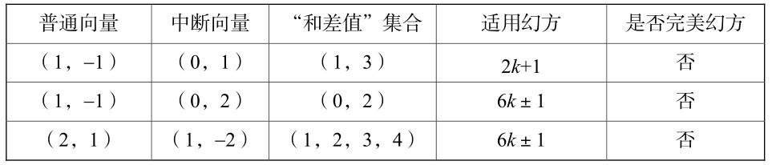
续表
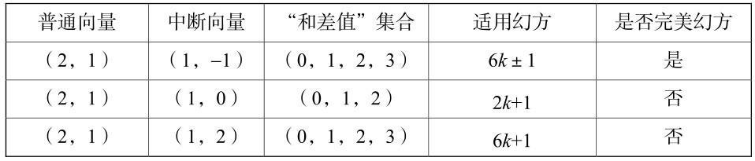
为了使大家更清楚地理解这两个向量的应用，图7-3给出了用推广的连续摆线法构造的2个奇数阶幻方。其中图7-3（a）是一个五阶幻方，其普通向量为（2，1），中断向量为（1，-1），图7-3（b）是一个七阶幻方，普通向量和中断向量分别是（1，-1）及（0，1）。
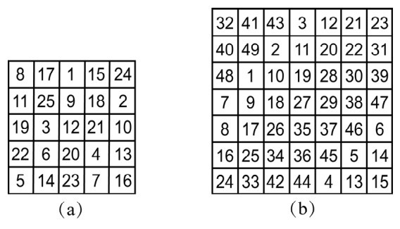
图7-3
学习了摆线法后，我们就可以制作幻立方了。奇数阶的幻立方可以用类似于普通幻方的连续摆线法构造，其普通向量是（1，-2），中断向量则有2个：小中断向量用于确定在一个面上摆7个数以后如何转到下一面摆数，如设向量值为（2，0）；大中断向量用于确定在7个面上摆好49 （=7×7）个数以后如何转到下一轮的49个数，如设向量值为（0，1）。在摆数过程中，假定行、列、面都是循环相接的。起始1置于中间一面（IV面）中间一列的最顶上一格以后，按普通向量（1，-2）在该面摆好7个数，然后按小中断向量（2，0）将8置于下一面（V面）的第5列第3格（因为7在上一面的第3列第3格），继续下一组7个数的摆放。按上述办法摆好49个数以后，按大中断向量（0，1）将50置于III面49的下方，开始下一轮的大循环，直至把343个数全部摆好，一个七阶完美幻立方就形成了。在这个完美幻立方中，共有193组的7数之和为1024。
按此方法及3个向量制成的七阶幻立方见图7-4。现在，读者们可以按上述方法来自制一个奇数阶的幻立方了。
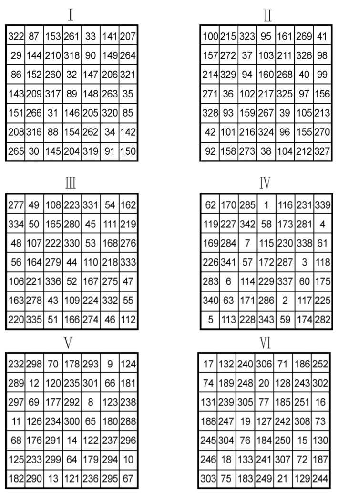
图7-4
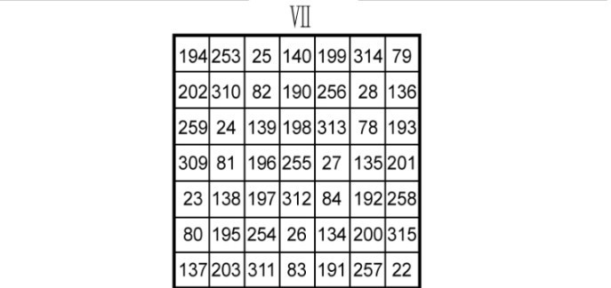
图7-4（续）
八阶幻立方早在1875年就被发现了，但作者都没有留下姓名。它也不像奇数阶幻立方有一般化的构造法。此处只简单介绍如图7-5所示的八阶幻立方，这个幻立方是1970年由宾夕法尼亚州年仅16岁的高中生迈尔斯独立发现的。这个幻立方有许多奇妙的性质，在幻方界很有名气。
①它是对称的，即幻立方中任意一对在中心对称位置上的两数之和均为513。
②幻立方中每条正交线和对角线上的8数之和均为2052。
③幻立方8个顶角上的8数之和也是2052，且幻立方内任意对中心对称的矩形体的8角上8数之和也是2052。
④整个幻立方可分割成64个二阶的小立方体（2×2×2），每个小立方体内的8数之和也是2052。
⑤这个幻立方中的数是从1到512，如果从513开始取数，则顺序取其后的512个数，按照相同的规律可进一步组成63个幻立方。连同原始的幻立方，可以构成一个64阶完美幻立方。在此基础上，以相同方式又可构成512阶幻立方。依次类推，可构成任意8n（n=1,2,3,…）阶幻立方。
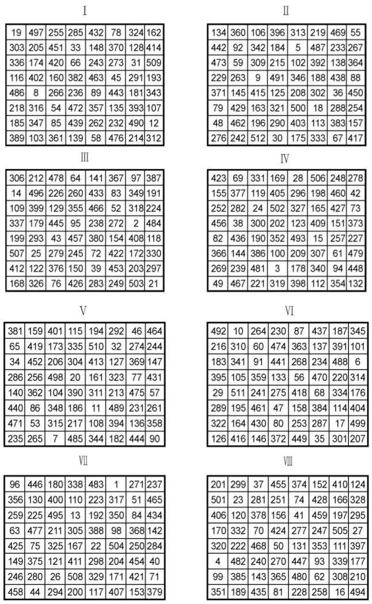
图7-5
现在，我们从三维回到二维。你知道反幻方吗？实际上，数学里有正有负，生物界有阳有阴，和谐共生，正是大自然的法则。因此，反幻方的出现也自然不过了。
美国趣味数学家马丁·加德纳首先提出了反幻方的概念：
若把n2个连续自然数1,2,…,n2按照某种规则排成一个n阶方阵，使得每行、每列及两条对角线上n个元素之和都不相等，则称这个方阵为反幻方。
当n为不小于3的奇数时，马丁·加德纳给出了一个构造反幻方的方法。图7-6是他构造的三阶与五阶反幻方。
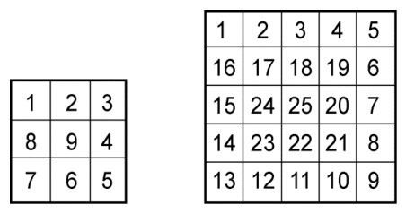
图7-6
大家可以看到，这两个反幻方都是将1填入左上角第1格，然后按顺时针螺旋形顺次填数。但马丁·加德纳的方法并不适用于偶数阶。我国数学家梁培基提出了一个构造法，可以构造出任意n≥3阶的反幻方。图7-7是n为3、4、5阶反幻方的实例，方法十分简单。这种构造方法可用下述反幻方定理来说明，它也是由梁先生所创造的。
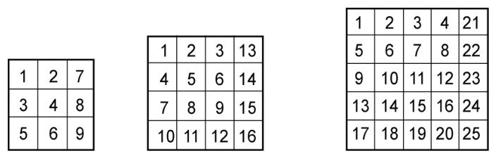
图7-7
反幻方定理：若n（n≥3）阶方阵为A=[aij]，
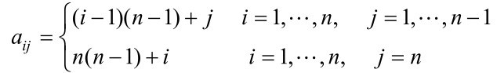
则A是一个n阶反幻方。对于这个定理的证明，在此就不再叙述了，但特别要说的是，梁培基是一位农民数学家。
梁培基原来是农民，出生在黄河北岸的封丘县城关乡西孟庄村，中学未毕业就因家境贫困而辍学，开始务农，但他始终怀揣着一个学习数学的梦想。梁培基只读过初中二年级，他的老师说：“他的家距离学校很远，每天步行十几里路到学校。他吃的不如人，穿的不胜人，用的低于人，但是学习成绩特别是数学成绩突出，远远高于其他人。”
由于改革开放的政策，农民经过努力奋斗成为种田能手、劳动模范、农民企业家、农民艺术家的大有人在，而成为“数学家”的可谓凤毛麟角。梁培基这个面朝黄土背朝天、裤管上卷的“泥腿子”却迷上了幻方。他从事组合数学研究30余年，在数学领域取得了累累硕果，被破格录用为国家干部，破格晋升为副研究员，成为名副其实的“农民数学家”。梁培基敢于向国际难题叫板，并且屡屡攻克难关，不断创新，打破多项“世界之最”的记录。他在这一领域中积极探索，取得了突出的成绩，发表了20余篇论文。
笔者在此插上一段梁先生的简介，就是鼓励大家要实干苦干，努力实现梦想！